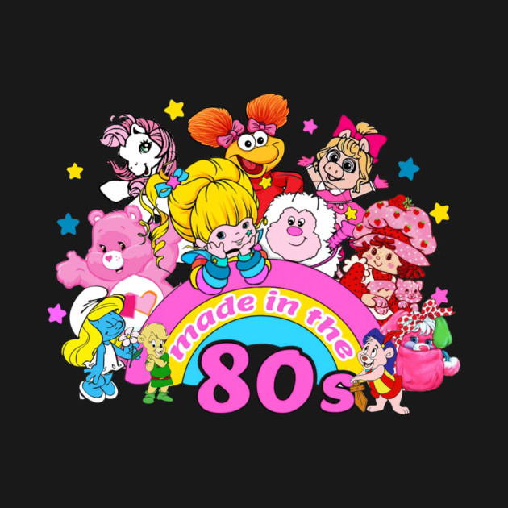
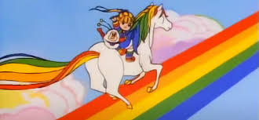

Growing Up in Color: The 80s as My Foundation
I grew up as a child of the 80s, in a world where our cartoons promoted love, harmony, bravery, and the belief that communities, no matter how different their members, could make things better together. At the same time, technology was developing at the same pace I was. Nothing came with instructions, nothing was intuitive, and nothing was standardized. We had to explore, experiment, take things apart, and learn as we went.

A quick generational reality check: I’m older than Google. Technology didn’t arrive polished or intuitive. We had to learn it one command, one crash, and one reboot at a time. Growing up before the internet gave me a kind of curiosity and resilience that still helps me today.
Curiosity as a Superpower
That combination, my neurodivergent brain and the era I grew up in, means I am wired to be open to almost anything new or unfamiliar. I didn’t inherit technology fully formed; I learned alongside it. I didn’t learn culture from books; I learned it from bright, colorful stories about friendship, fairness, and justice. My brain has always looked for patterns, systems, and connections, and the 80s were a perfect playground for developing those instincts.
Because of that, I approach the world with a mix of experimentation, adaptability, and optimism. I have learned to embrace being different rather than trying to fit into structures that were not designed with me in mind. As I explore what global citizenship means, I can see how those early experiences shaped my capacity to welcome difference, navigate uncertainty, and build bridges across perspectives.
Bringing Color Forward
This portfolio weaves together the many influences that brought me here: the global experiences that shaped my understanding of community, the cartoons that taught me empathy, the technology that invited me to explore, the neurodivergence that shaped how I see patterns, and the education that continues to broaden my world.
I hope that as you explore these pages, you will see not only the story of where I have been, but also the values I carry forward. Curiosity, compassion, and the belief that everyone deserves a world full of color.
Welcome to my Rainbow